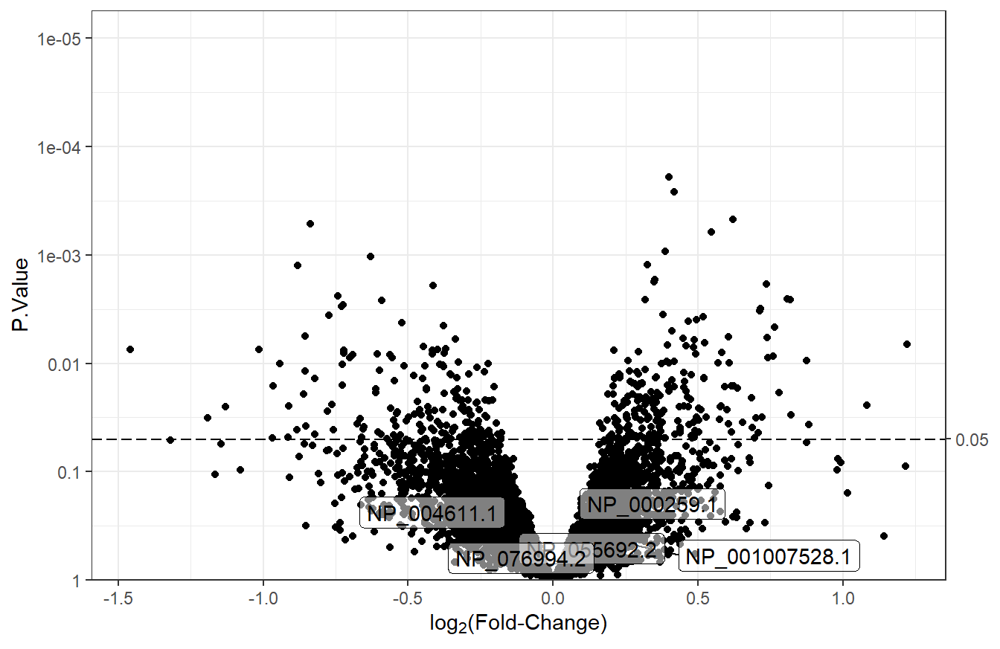

7.5 Volcano Plots
Volcano plots are used to summarize the results of differential analysis. They are scatter plots that show log\(_2\) fold-change vs statistical significance. The plot_volcano function in the MSnSet.utils package is used to create volcano plots. For ANOVA results, volcano plots will not be useful, since the p-values are based on two or more contrasts; the volcano plots would not display the characteristic “V” shape.
7.5.1 Base plot
Unless the differential analysis results are from a one-sample t-test with a single comparison, volcano plots need to be made for each contrast, since there are multiple logFC values for each feature. For this example, we will make a volcano plot using the log\(_2\) fold-changes from the t_res1 table. We will set sig_threshold to 0.05, which will add a dashed horizontal line indicating the cutoff for statistical significance. Normally, the adjusted p-values would be used, though they are all extremely high in these results, so we will use the unadjusted p-values for the examples.
plot_volcano(df = t_res1, logFC = "logFC",
pvals = "P.Value", sig_threshold = 0.05)
7.5.2 Label top features
plot_volcano has an argument called label to label the top most significant features. By default, the top 8 features will be labelled. The column used for labeling must be in the data frame supplied to the df argument. In this case, we will need to create it using the row names.
# Create RefSeq column for labeling
t_res1$RefSeq <- rownames(t_res1)
# Volcano plot with feature labels
plot_volcano(df = t_res1, logFC = "logFC",
pvals = "P.Value", sig_threshold = 0.05,
label = "RefSeq") # label by RefSeq - top 8
7.5.3 Label specific features
There may be cases when the features to label are not necessarily the top \(n\). To label specific features, we need a column where everything but the labels are NA, and we need to set num_features to the number of rows in the data so that nothing is discarded. For this example, we will select a random group of 5 features to label.
# 5 random RefSeqs to label
random_features <- sample(t_res1$RefSeq, size = 5)
# If RefSeq is not in the random group of 5, set it to NA
t_res1 <- mutate(t_res1,
custom_labels = ifelse(RefSeq %in% random_features,
RefSeq, NA))
# Volcano plot with feature labels
plot_volcano(df = t_res1, logFC = "logFC",
pvals = "P.Value", sig_threshold = 0.05,
# Custom labels
label = "custom_labels", num_features = nrow(t_res1))
7.5.4 Modify point colors
We will change the color of points to reflect their significance and the sign of the log\(_2\) fold-change. We start by creating a point_color column with three groups: “down,” “up” and “NS” (not-significant). Then, the point_args argument is modified so that the color of points depends on these groups.
# Determine point colors based on significance and sign of the logFC
# We would normally use adj.P.Value instead of P.Value
t_res1 <- t_res1 %>%
mutate(point_color = case_when(
P.Value < 0.05 & logFC < 0 ~ "down", # significantly down
P.Value < 0.05 & logFC > 0 ~ "up", # significantly up
TRUE ~ "NS") # not significant
)
# Color points
v1 <- plot_volcano(df = t_res1, logFC = "logFC",
pvals = "P.Value", sig_threshold = 0.05,
# Change point color
point_args = list(mapping = aes(color = point_color)))
v1We will change the default colors to be more informative. Points in the “down” group will be #5555ff (blue), points in the “up” group will be red3, and points in the “NS” group will be lightgrey. We will also remove the legend, since it doesn’t add much information.
# Change colors
v1 + scale_color_manual(values = c("#5555ff", "red3", "lightgrey"),
breaks = c("down", "up", "NS")) +
theme(legend.position = "none") # do not show legend
7.5.5 Multiple volcano plots
For results generated by limma_contrasts, we should make separate plots for each comparison with facet_wrap or facet_grid.
# Basic volcano plot
plot_volcano(df = t_res2, logFC = "logFC", pvals = "adj.P.Val",
sig_threshold = 0.05) +
facet_wrap(vars(contrast)) + # plot for each contrast
labs(title = "Volcano Plots of limma_contrasts Results")